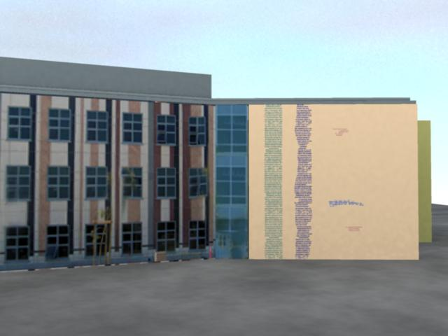
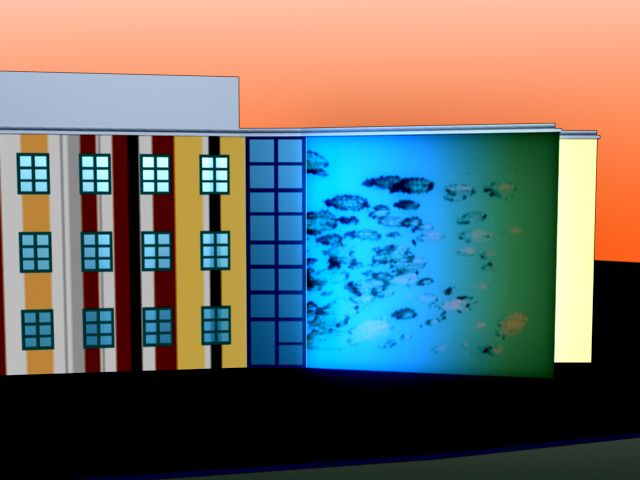
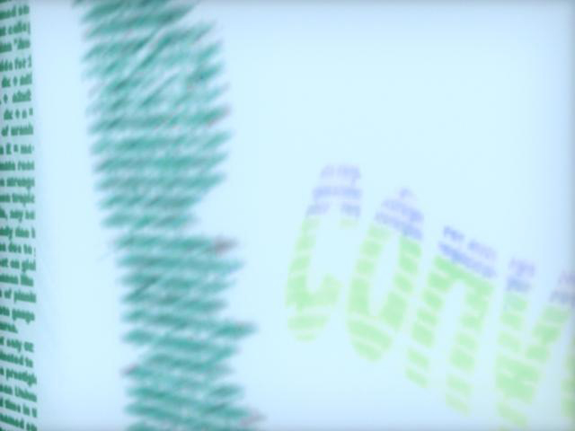
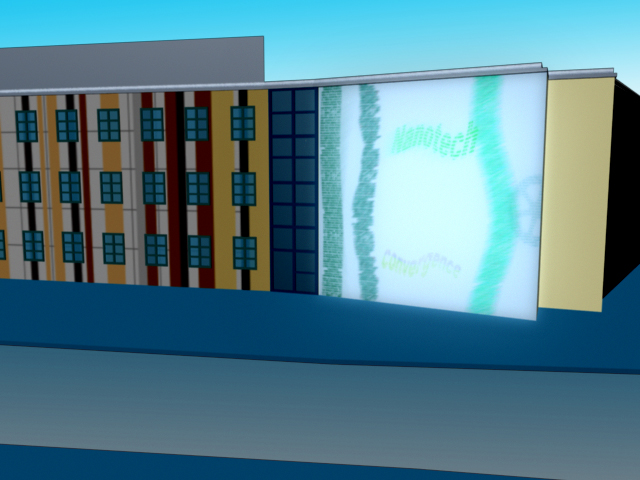
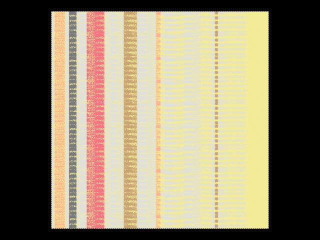
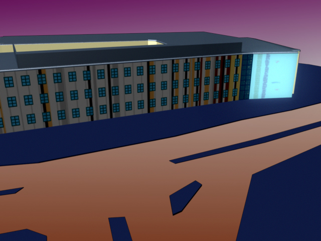

Interactive Nanotext Imagery:A Visual Installation
for the |
Visual Upon a muted background, large vertical bars move slowly from left to right. The bars mirror the permanent tile stripes on the building's facade, but closer inspection reveals that they are actually made up of nanotext: tiny characters such as letters from various alphabets, mathematical symbols, musical notation, etc. As the bars progress across the screen, they begin to break up into smaller shapes, eventually forming words or icons related to study in the CNSI building and themes at UCSB in general. The icons grow clearer as more and more bars wash across, then begin to decay to invisibility. This process mirrors the changing shapes of sand on the adjacent beach, just as the actual speed and movement of the bars is linked in real-time to the motion of the ocean waves. In each cycle, different icons are slowly created and washed away.
A short animation in red (.mov)
Animation formatted for the building (.mov)

  

|